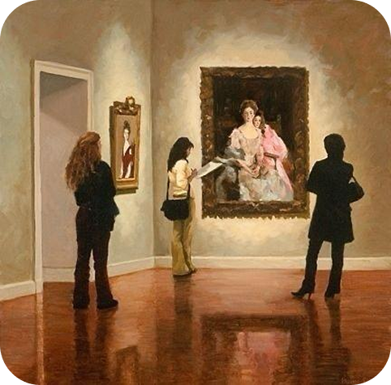
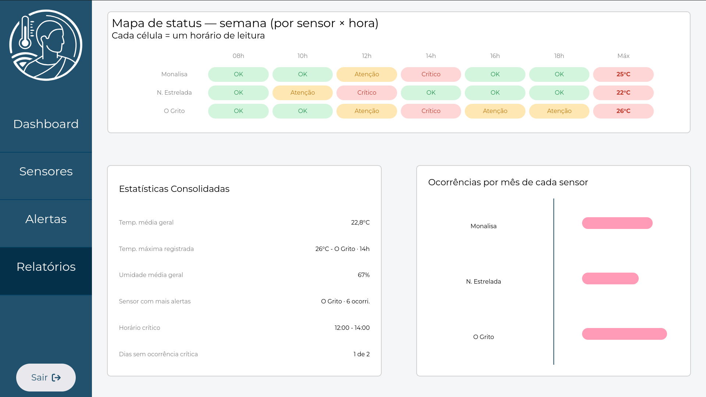
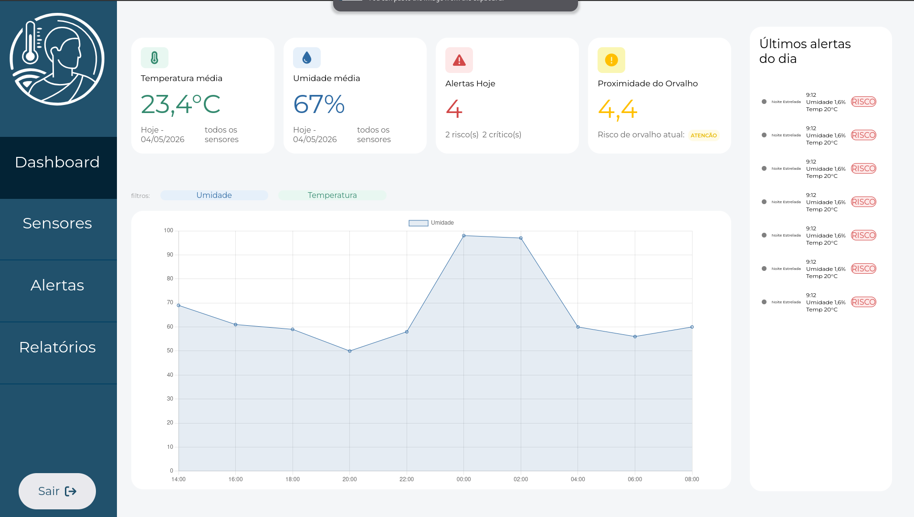
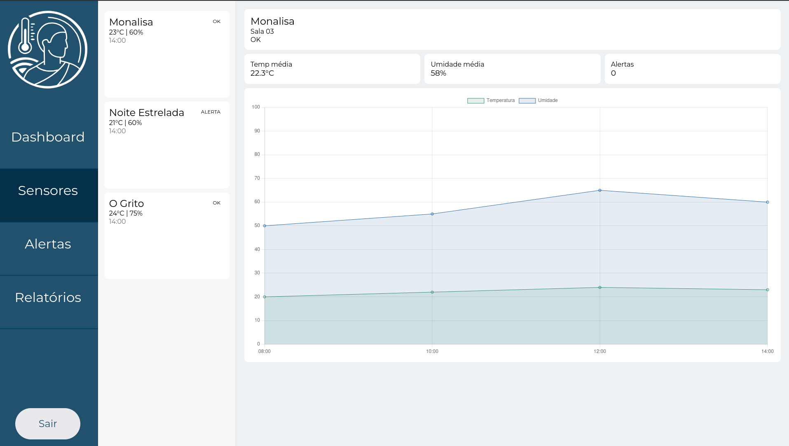

A Thermus nasce para

Quem somos nós
A Thermus nasce para

Mais do que evitar prejuízos, nossa proposta é:
Qual a Importância?
O orvalho gera umidade em superfícies, favorecendo fungos, mofo e oxidação..
A umidade causa expansão e contração, levando a deformações e craquelamento.
Esses efeitos resultam na deterioração permanente das obras, tornando essencial a prevenção.
Nossa solução oferece uma visualização clara e intuitiva por meio de gráficos detalhados, permitindo o monitoramento em tempo real de uma ou mais seções do acervo. Com essa funciona classade, o cliente pode acompanhar as variações climáticas de setores específicos ou de todo o museu simultaneamente, facilitando a classentificação de áreas críticas e garantindo uma gestão de preservação baseada em dados precisos.



Quantidade de Obras
Perfil do Acervo
CUSTO ESTIMADO DO ACERVO
R$ 0
RISCO DE RESTAURO (20%) Canadian Conservation Institute - CCI
R$ 0
INVESTIMENTO EM MONITORAMENTO
R$ 0
ECONOMIA GERADA — ROI
R$ 0